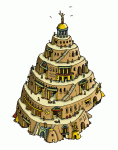

Die Nataren sind da

"Wie soll es nur weitergehen?“ - Diese Frage hörte man in den Dörfern und Ländereien des Öfteren in letzter Zeit, wenn die Krieger gemeinsam am Lagerfeuer saßen. Die tapferen Soldaten hatten unzählige ruhmreiche Schlachten geschlagen, jedoch waren die Senatoren, Häuptlinge und Stammesführer alt geworden. Zu alt um noch viel länger die Bewohner eroberter Dörfer davon zu überzeugen sich ihrem Reich anzuschließen.
Es gilt eine letzte große Schlacht zu schlagen. Ein Kampf gegen einen Feind, dessen prunkvolle Bauten vergangener Epochen wie aus dem Nichts auftauchten und die Welt in Aufregung versetzten. „Die Nataren sind da“ hallt es durchs Land.
Die Nataren, jener uralte Stamm der bereits seit einigen Zeitaltern als ausgestorben galt, war zurück. Bedrohlich wirkten die Natarenkrieger, wie sie die Dörfer bewachten in denen man, so erzählte man sich, ein beachtliches Gebäude errichten könne. Man sprach von Weltwundern und von Artefakten die man benötige um diesen prachtvollen Bau vollenden zu können. Wo diese Artefakte jedoch zu finden sind, dass wusste niemand und so blieb den Menschen nichts anderes übrig als darauf zu hoffen, dass diese bald gefunden werden.
Bis es jedoch so weit ist, sammeln die tapferen Krieger, die geschickten Baumeister und die erfurchtgebietenden Ältesten ihre letzten Reserven. Diese eine Schlacht gilt es noch zu schlagen, diesen Wettlauf um den Bau des Weltwunders zu gewinnen um dann in die Geschichte einzugehen als ruhmreiche Feldherren von denen man sich auch in ferner Zukunft noch an den Lagerfeuern erzählt...
Es gilt eine letzte große Schlacht zu schlagen. Ein Kampf gegen einen Feind, dessen prunkvolle Bauten vergangener Epochen wie aus dem Nichts auftauchten und die Welt in Aufregung versetzten. „Die Nataren sind da“ hallt es durchs Land.
Die Nataren, jener uralte Stamm der bereits seit einigen Zeitaltern als ausgestorben galt, war zurück. Bedrohlich wirkten die Natarenkrieger, wie sie die Dörfer bewachten in denen man, so erzählte man sich, ein beachtliches Gebäude errichten könne. Man sprach von Weltwundern und von Artefakten die man benötige um diesen prachtvollen Bau vollenden zu können. Wo diese Artefakte jedoch zu finden sind, dass wusste niemand und so blieb den Menschen nichts anderes übrig als darauf zu hoffen, dass diese bald gefunden werden.
Bis es jedoch so weit ist, sammeln die tapferen Krieger, die geschickten Baumeister und die erfurchtgebietenden Ältesten ihre letzten Reserven. Diese eine Schlacht gilt es noch zu schlagen, diesen Wettlauf um den Bau des Weltwunders zu gewinnen um dann in die Geschichte einzugehen als ruhmreiche Feldherren von denen man sich auch in ferner Zukunft noch an den Lagerfeuern erzählt...